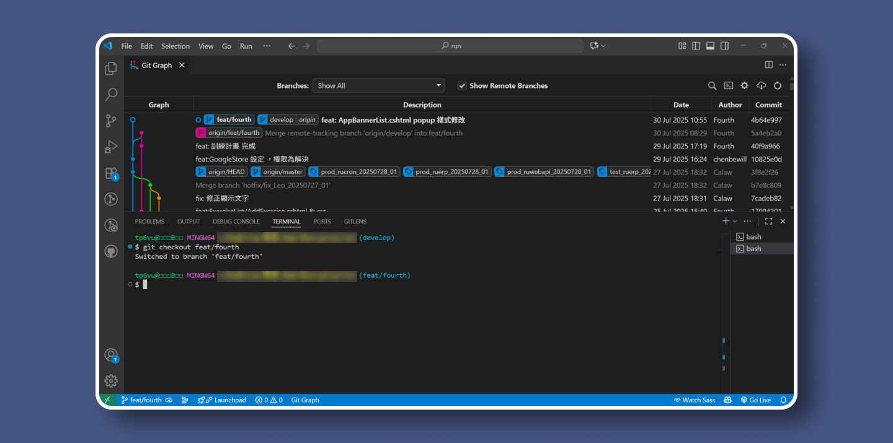
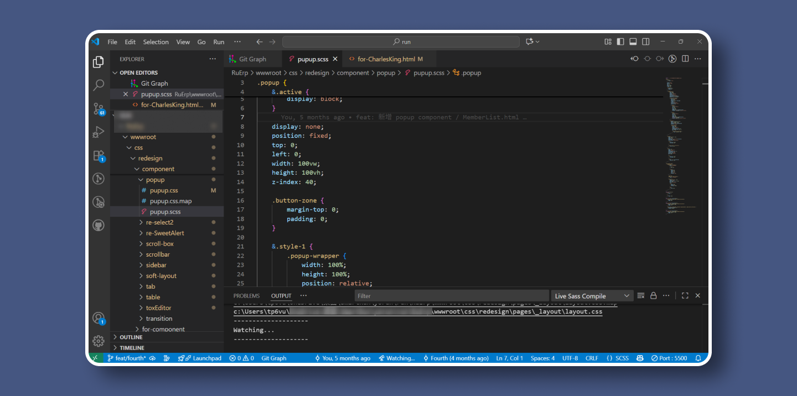
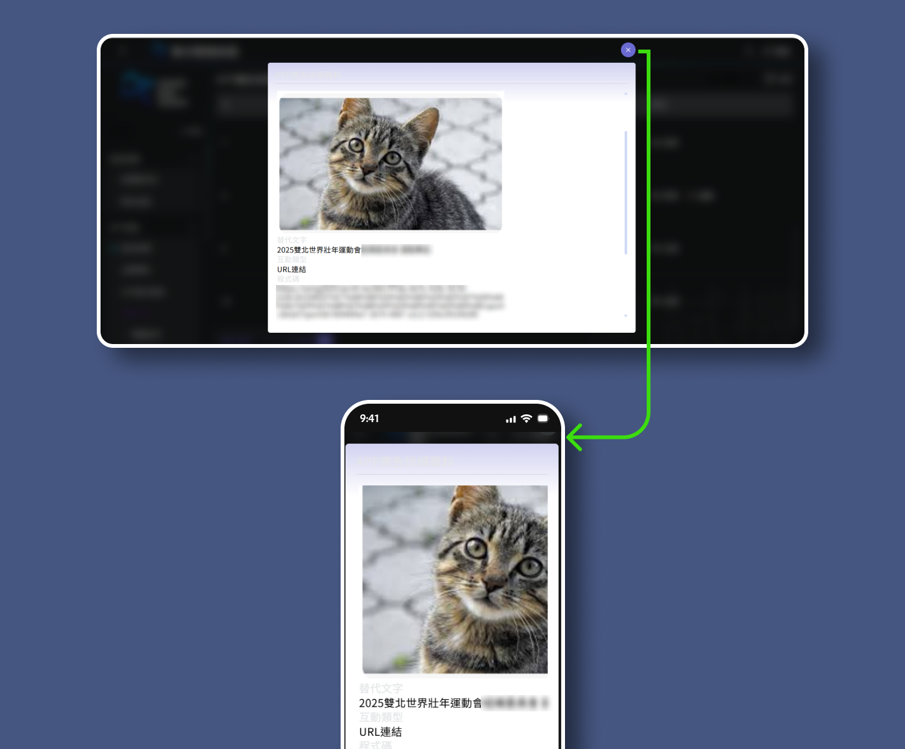
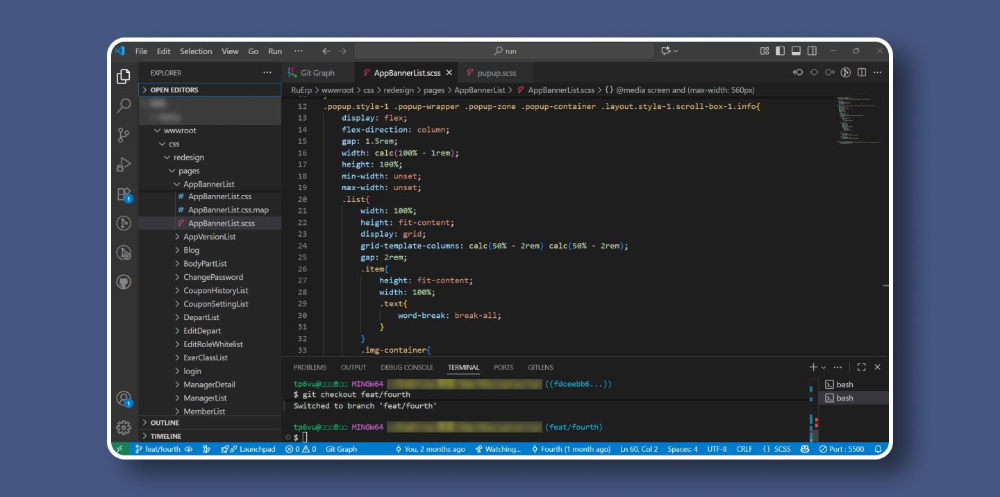
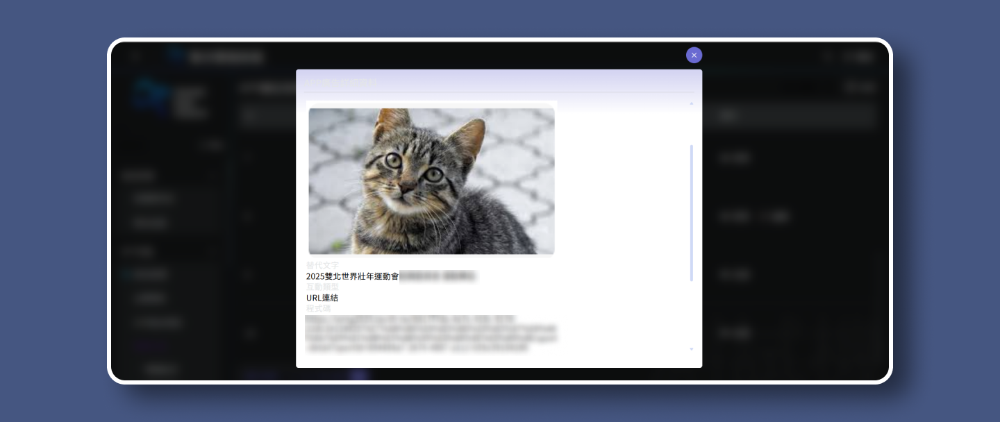
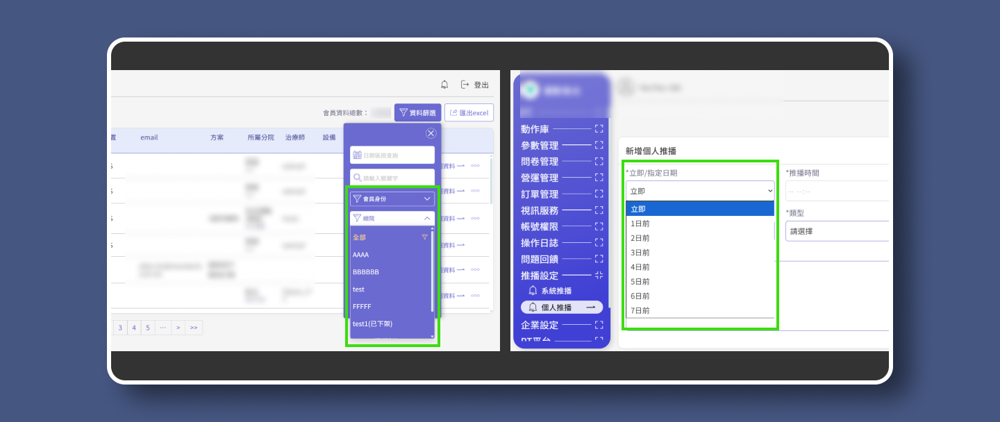

Healthy Aerobic Exercise Management System
健康有氧運動APP
後台管理系統

內部專案
專案簡介
內部開發專案，涵蓋手機APP與後台管理系統。包含會員管理、影音訂閱、部落格文章管理、推播訊息、廣告設定、問卷設計與統計，以及跑步/物理治療課程管理...等。
除了支援前台APP的功能外，同時加入其他營運需求。此專案部分功能是公司「延伸既有系統」搬運而來，因此我主要針對新舊功能的UI做統整，以及部分功能的UX調整，使後台系統操作邏輯與視覺風格保持一致。
我的角色與貢獻
◢
協作流程
-
a.
在 Git 分支（feat/fourth）上完成設計系統實作，與後端工程師同步開發，處理合併衝突與視覺調整。
-
b.
調整Razor view 模板結構，討論需要重新串接的細項，確保UI與後端整合順暢
◢
設計系統建立
-
a.
使用 Figma 規劃色彩基調，定義字體、按鈕。
-
b.
創建表單、元件（Component）CSS 規則。
◢
UI/UX 實作
-
a.
MVC 架構下，建立設計系統與各頁面CSS。
-
b.
直接修改cshtml class 與 HTML tag，調整部分結構，將設計系統應用到各功能頁面。
-
c.
調整排版、布局與互動細節，確保跨模組一致性與良好使用體驗。
-
d.
重新調整工程師使用的第三方套件樣式，使其符合設計系統，確保後台整體視覺與操作一致。
配合專案需要
滾動調整自己的角色
由於公司的決策限制，此專案時程僅有35天，同時有其他專案必須進行。在與後端工程師討論後，我調整自己的角色與工作流程。跳脫制式的設計流程，直接進入MVC 架構，與工程師同步開發，大幅縮短傳統切版檔案交付、節省反覆比對的時間消耗，使專案如期完成。
此專案作品集主要說明我如何在有限資源下，與後端工程師協作，解決既有系統的 UI 邏輯問題，並在功能搬運導致畫面排版混亂時，重新整理與比對介面，建立一致且清晰的使用體驗。
-
1.
跳脫制式設計流程，透過Git 與後端工程師同步開發。
-
2.
既有系統的UI邏輯問題，工程師搬運功能後排版紊亂，一併統整與優化展示。

Section 1
跳脫制式開發流程
屬於我自己分支
在 Git 中，我建立了本地分支 feat/fourth，完成檔案修改後，推送至遠端 develop。工程師git pull之後，可以透過畫面，直觀的了解那些功能需要修改，大幅省去反覆比對、合併程式碼的時間耗損。
以下使用Popup window 顯示資料為範例，說明Component 套用與協作流程。

Component Library
在wwwroot內直接建立元件庫，制式化各種元件的基礎樣式。特殊細節或不同需求在各頁scss中另外編寫。
此處以Popup為例，建立Popup window 基礎視覺風格與完整RWD。下面透過影片展示，說明Component 套用與協作流程。

搬運後的UI問題
工程師搬運其他系統Popup window ，出現視覺風格不統一與圖文排版問題。Popup window的關閉按鈕在原系統中，也有畫面尺寸改變導致按鈕超出螢幕畫面，無法關閉視窗的情況。

上圖
內容的布局樣式，寫在廣告管理頁的SCSS中，檔案命名與Razor View相同，各頁面引用同名的CSS，方便後續的維護。如果工程師有臨時需要，也可快速縮小範圍查找，避免大海撈針。
影片
接修改結構，套用class，因工程師將Popup 內容另外做成 PartialView，而主標題與關閉按鈕等共用功能在主頁面裡，所以將部分Code 移到主功能頁cshtml 內。
-
在MVC架構中，有許多PartialView，需要在不同檔案之間調整<tag>與架構，以確保Class 套用正確。
透過Git 與工程師合作
因其他修改混在同一次提交，而當天正好要進行測試機與正式機同步，工程師會來不及修正Popup window 關閉功能。因此我使用 cherry-pick 將廣告管理 Popup window 的提交單獨挑出，推送到遠端 develop；其餘修改則保留在遠端 feat/fourth，供工程師後續串接。
-
推送完成後，知會工程師確認需要重新串接或修正功能。 工程師git pull之後，可以透過畫面直觀了解損壞的功能進行修正，或是透過Git快速比對，不需要反覆擷取、合併切版程式碼。

確認測試機與本地一致
在工程師更新至測試機後，確認操作流程與UI視覺細節，確保沒有遺漏或錯誤。
-
1.
比起單純製作設計稿和切版，我真正參與設計落地的過程，實際的解決問題。
-
2.
透過Git與工程師協作，為團隊效率大幅提升。
Section 2
調整布局RWD
基礎功能邏輯統一
解決既有系統的UI擠壓問題，拓展新的Sidebar階層。 邏輯性歸納篩選功能，制定規則，標準化功能性設計視覺。

問題(上圖)
在既有的後台中，Sidebar與右側主區塊相互擠壓，導致Table 變形。Sidebar標題文字換行後，被容器壓迫，難以閱讀。
解決(影片)
人類肉眼與大腦，不可能一次接收畫面上的全部訊息，因此使用水平Scrollbar，優先顯示重要資訊，次要訊息或操作按鈕放置於右側，於滾動卷軸後顯示。 Sidebar 為導航功能按鈕，文字需清晰方便閱讀為優先考量。因此固定Sidebar寬度，給予充裕空間。使用階層化的方式，展開各功能標題下的功能按鈕，以可拓展第三階層方式設計，以利後續平台的擴充。
配合RWD設定Breakpoint :
991px →Sidebar position: fixed;
767px →table 改為卡片型態
-
在MVC架構中，有許多PartialView，需要在不同檔案之間調整<tag>與架構，以確保Class 套用正確。

問題(上圖)
篩選條件歸納邏輯不同，部分頁面集中、部分被散落在外。
解決(影片)
我設計了將篩選條件統一收納進『篩選側欄』方案，觸發按鈕則固定放在 _Layout.cshtml 的<header>。由於不確定單一按鈕是否能對應不同頁面的篩選邏輯，我先準備了兩個方案與工程師討論：
-
a.
使用單一按鈕，依頁面內容切換不同的篩選側欄
-
b.
每一頁各自放置一個篩選按鈕與對應的側欄
最後討論決定採用 a，但實作邏輯是共用同一個篩選側欄，由各頁的 View 提供自己的篩選條件。
Section 3
第三方套件樣式修改
視覺風格標準化
規則化統整<select>與第三方套件樣式。

問題(上圖)
在原系統中，<select>未統一樣式。
解決(影片)
<select>元件受系統影響，難以客製化，我與工程師討論後決定進行大規模改造。奠基於團隊已建立良好的 Git 協作流程，我可以安全地在 cshtml 中進行結構修改並套用 CSS component，工程師則在此基礎上負責資料串接與 JS 實作。
-
基於團隊的信任與分工，讓我們能順利完成一般工程師不太願意嘗試的改動。